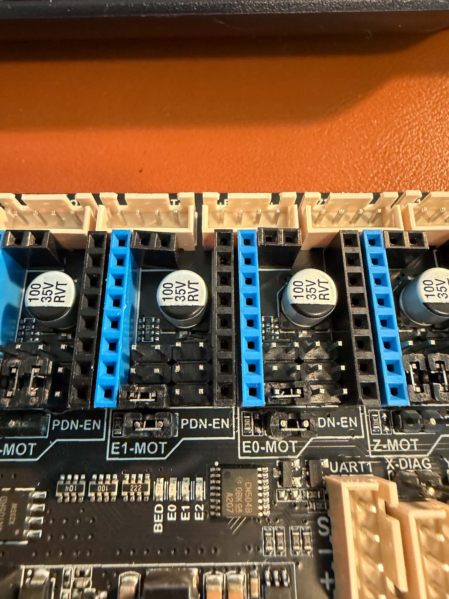
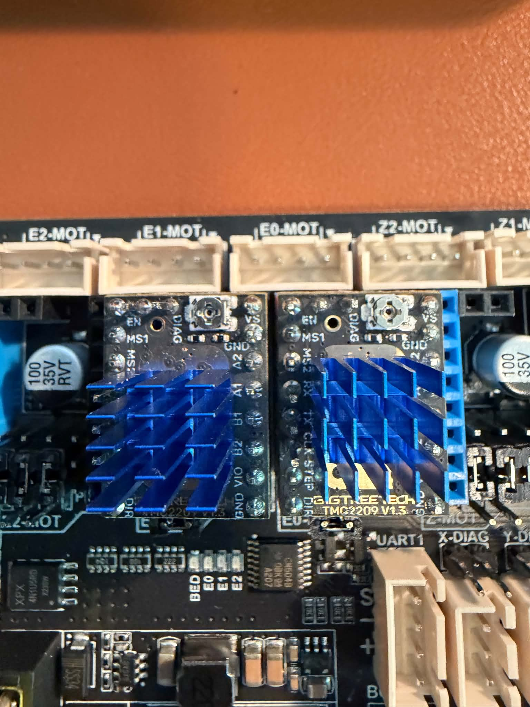

run_current — ikke VREF../tmc2208_uart_test.md og ../jumper_guide.md.

| Slot | PDN-EN | MS-grid (2×4) | Driver | Status |
|---|---|---|---|---|
| E0 | På | Tom | BTT TMC2208 V2 | Produktion |
| E1 | På | Tom | BTT TMC2208 V2 | Produktion |
| E2 | — | — | — | Ikke i brug (sensor endstop) |

DUMP_TMC STEPPER=feeder1DUMP_TMC STEPPER=feeder2TEST_FEEDER1 / TEST_FEEDER2IFCNT-fejl trods jumper-test.
Standalone (alle jumpere AF + VREF) var midlertidig løsning — se ../standalone_guide.md.